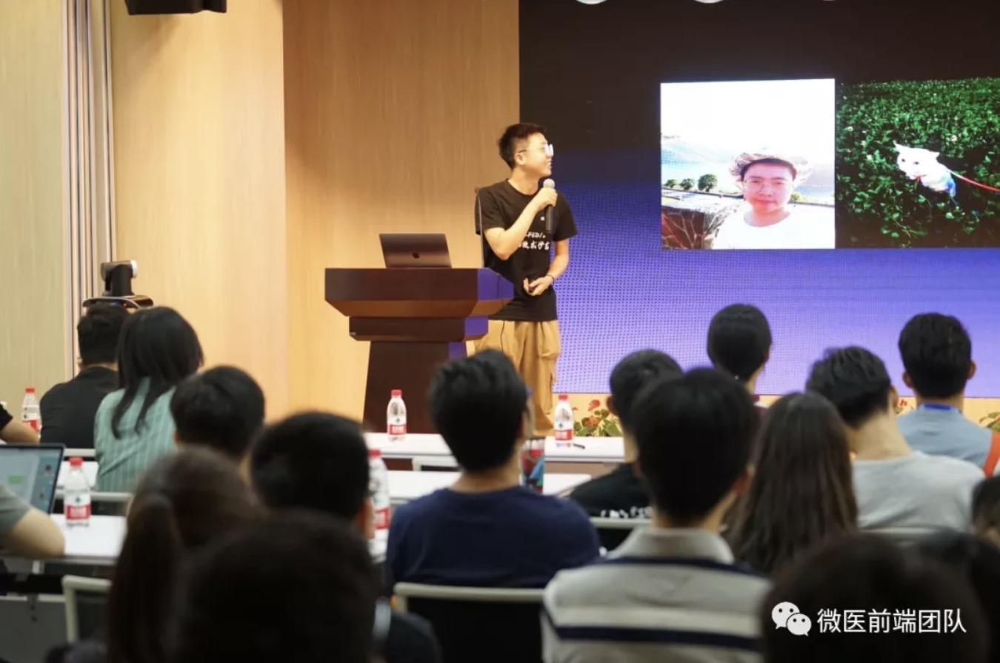
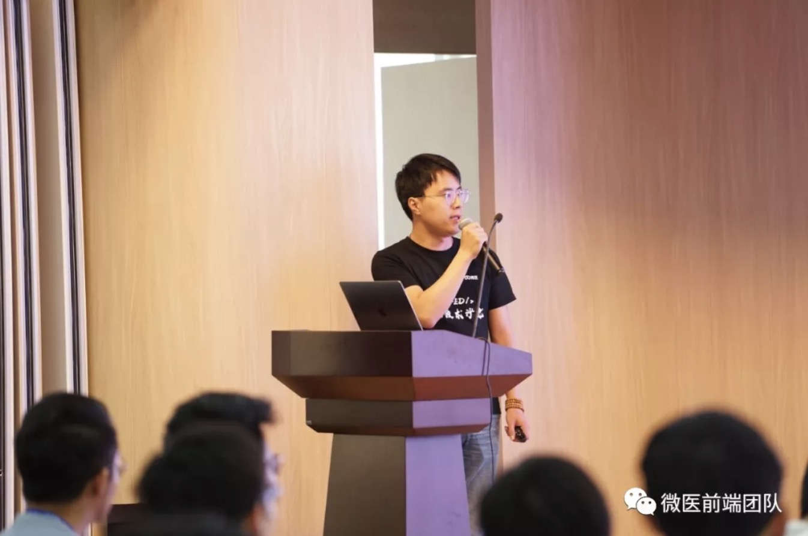
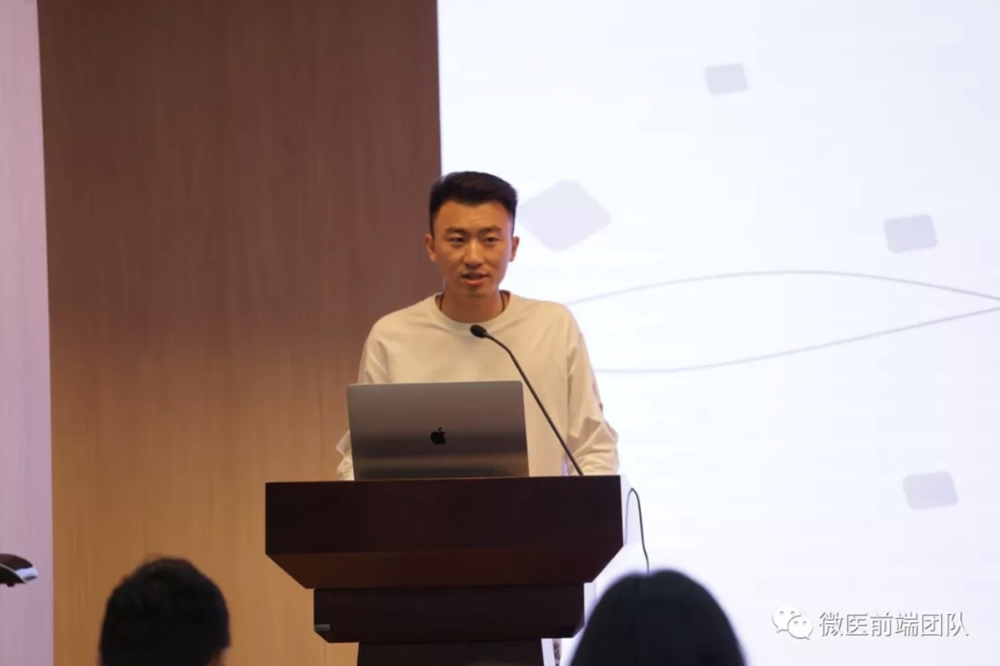
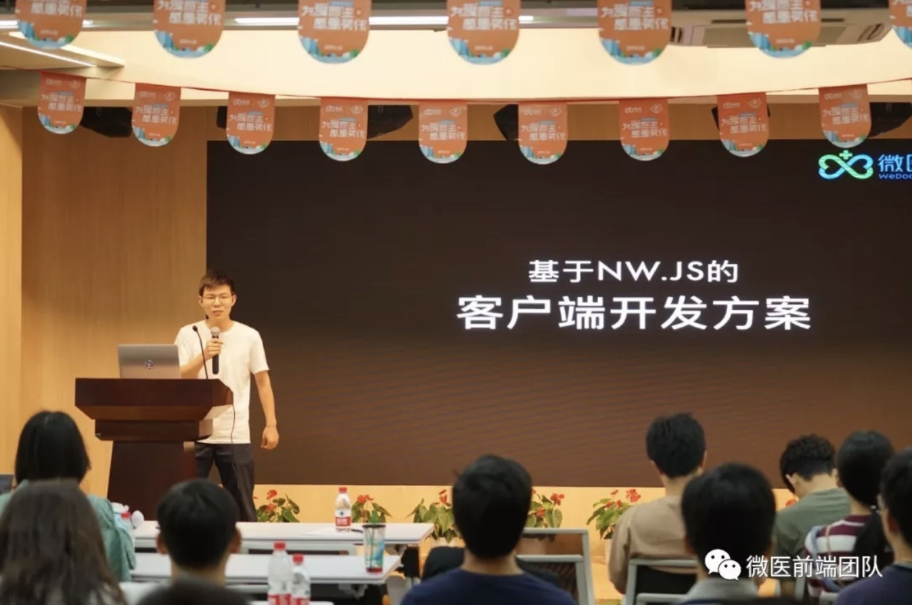
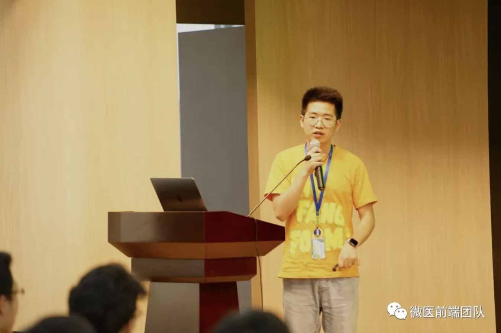
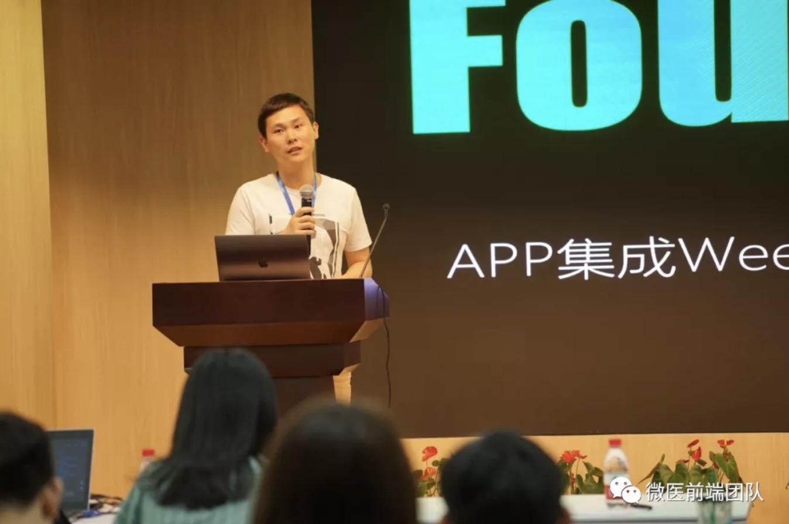

原文连接:https://www.cnblogs.com/lhb25/p/the-2nd-wedoctor-fed-conference.html
5 月 25 日，以「无界」为主题的第二届微医前端技术沙龙成功举办。本届沙龙的演讲题目涵盖了前端技术几个主要的应用场景，包括服务端、桌面端以及跨平台的开发。最近几年前端技术发展非常快，各种可以提高开发效率的新技术和框架层出不穷，让原来的前端工程师蜕变成了新一代的全端工程师，技术之间的界限被打破，相互碰撞、融合和进化。
活动伊始，本届沙龙活动主持人，来自用户技术部的前端团队负责人洪波对远道而来的微医外部30多家公司的同行和100多位来自内部各个部门的同事表示了欢迎，感谢大家挤出宝贵的周末时间来参加第二届微医前端技术沙龙，并对本次沙龙的主题进行了阐述和说明。
 本届沙龙邀请到了公司元老级的前端工程师立明为本次沙龙致开幕辞，立明目前是用户技术部负责人，带着近150人的技术团队。立明向大家介绍了微医的业务以及在互联网医疗领域做的创新探索。接下来，韩高钶、高翔、宋睿、蒋嘉巍、殷利萍、胡梦杰与张明峰7位讲师分别给大家做分享与交流。
本届沙龙邀请到了公司元老级的前端工程师立明为本次沙龙致开幕辞，立明目前是用户技术部负责人，带着近150人的技术团队。立明向大家介绍了微医的业务以及在互联网医疗领域做的创新探索。接下来，韩高钶、高翔、宋睿、蒋嘉巍、殷利萍、胡梦杰与张明峰7位讲师分别给大家做分享与交流。
主题一《Feb.js - 基于 Vue 的通用应用框架》

医院平台的韩高钶，结合微医在SSR实践中的经验为我们介绍了 Vue SSR 的实现原理，针对 SSR 架构中存在的一些挑战来介绍 Feb.js 是如何保证服务的高可用、高性能和高体验的，以及如何快速的使用 Feb.js 搭建一个企业级的 SSR 应用。
主题二《微医在 Node.js 微服务方向的探索》

用户技术部的高翔，向大家分享了如何使用 Node.js 调用后端 Dubbo 服务，包括服务的注册与发现、网关接入、全链路追踪等，同时介绍了 BFF 层的架构思想以及优势。
主题三《前端异常监控的黑科技》

架构平台的宋睿，向大家介绍了如何使用场景回溯来复现 Bug 的过程，包括异常录制、异常捕获、异常回放以及性能调优等话题。同时介绍了如何在测试环境下使用，为系统带来全新的质量检测。
主题四《基于 NW.js 的桌面应用解决方案》

智能平台的蒋嘉巍，结合业务中的实践向大家分享了桌面开发和 Web开发的区别，介绍了基于 NW.js 的客户端解决方案的使用方式，包括进程通信、请求代理等，为前端开发桌面应用提供更便利的方式。
主题五《WebView 和 H5 的那点事》
用户技术部的殷利萍，分享 JavaScript 与 Native 的几种通信方式及优缺点对比，H5 本地化解决方案的实现，Webview Cookie 管理以及移动端调试的多种方案。
主题六《Weex 在微医 APP 的应用实践》


用户技术部的胡梦杰与张明峰，结合业务中的实践向大家分享了微医如何从零搭建 Weex 整套解决方案，包括 Weex 如何集成到微医 APP，Weex 页面渲染流程、降级渲染等。同时也介绍了 weex-code、weex-tester、weex-mananger 等一系列 Weex 相关服务的实现。

温馨提示：关注“微医前端团队”公众号即可获取沙龙所有演讲PPT。可以通过扫码上面二维码快速获取。